Desde la preparación de los contenedores hasta Forms y Reports operativos
Esta guía te ayudará a crear el dominio WebLogic usando el Configuration Wizard con interfaz gráfica. El dominio se crea sobre la infraestructura de contenedores
admin, forms y reports orquestada con
Docker Compose, a partir de la imagen image_forms_14.1.2
(ver Crear imagen) y con el dominio compartido
en una carpeta del host.
La guía tiene dos partes: la creación del dominio (preparación de los contenedores, schemas RCU y Configuration Wizard) y los pasos posteriores (AdminServer, OHS, Node Manager, Managed Servers y completar Reports).
Un dominio, creado una vez, compartido por los tres contenedores.
sudo apt install tigervnc-viewer o sudo yum install tigervncimage_forms_14.1.2 disponible localmente
(ver Crear imagen)docker-compose.yml en dist/ (se crea en el Paso 0.4)OPSS, MDS, IAU, STB, etc.) que el dominio JRF / Forms & Reports usa mediante sus Data Sources JDBC.SYSDBA para ejecutar RCU.
El dominio WebLogic no se crea en un único contenedor “monolítico”, sino en una
infraestructura de varios contenedores orquestada con Docker Compose.
Todos parten de la misma imagen (image_forms_14.1.2, construida según
Crear imagen) y comparten el
dominio a través de una carpeta del host. Antes de crear el dominio hay que preparar
ese entorno: prerrequisitos, estructura de carpetas y el archivo
docker-compose.yml.
Docker Compose define y levanta, con un solo archivo, los siguientes servicios:
| Servicio (compose) | Contenedor / hostname | Función | Cuándo se usa |
|---|---|---|---|
admin |
weblogic-admin |
AdminServer + Node Manager. Es donde se crean los schemas RCU y el dominio (Configuration Wizard vía VNC). | Desde el Paso 0 (único servicio necesario para crear el dominio). |
forms |
weblogic-forms |
Managed Server WLS_FORMS con su Node Manager (FormsMachine).
También se usa para compilar Forms y Pro*C. |
Después de crear el dominio. |
reports |
weblogic-reports |
Managed Server WLS_REPORTS con su Node Manager (ReportsMachine). |
Después de crear el dominio. |
Elementos compartidos entre los tres servicios:
image_forms_14.1.2 (con el software
FMW, Forms & Reports ya instalado). Los contenedores no instalan WebLogic; solo lo ejecutan.weblogic-network: permite que los contenedores
se resuelvan por hostname (p. ej. forms contacta a
weblogic-admin:7001)../domains): el dominio vive fuera
de los contenedores, por lo que sobrevive a su recreación y es el mismo para los tres../app): fuentes y ejecutables
(.fmb, .fmx, .pc, etc.)../scripts/<servicio>):
entrypoints y utilidades (RCU, GUI, Node Manager). Host Docker
┌──────────────────────────────────────────────────────────┐
│ dist/ │
│ ├─ docker-compose.yml │
│ ├─ domains/ ──────────┐ (bind mount compartido) │
│ ├─ app/ ────────┐ │ │
│ └─ scripts/ │ │ │
│ ▼ ▼ │
│ ┌───────────────┐ ┌───────────────┐ ┌───────────────┐ │
│ │ weblogic-admin│ │ weblogic-forms│ │weblogic-reports│ │
│ │ AdminServer │ │ WLS_FORMS │ │ WLS_REPORTS │ │
│ │ NodeManager │ │ NodeManager │ │ NodeManager │ │
│ └───────┬───────┘ └───────┬───────┘ └───────┬───────┘ │
│ └──────── weblogic-network (bridge) ┘ │
└──────────────────────────────────────────────────────────┘Secuencia de trabajo: primero se levanta solo el
servicio admin (Paso 0), se crean los schemas RCU (Paso 1) y el dominio
con el Configuration Wizard (Pasos 2–4). Una vez que el dominio existe en
./domains, se levantan forms y reports
(ver “Pasos Después de Crear el Dominio”).
| Prerrequisito | Cómo verificarlo |
|---|---|
| Docker Engine instalado y el usuario con permisos para usarlo | docker version |
Docker Compose v2 (comando docker compose, no
docker-compose v1, que falla con Python 3.12+ por
distutils) |
docker compose version |
Imagen image_forms_14.1.2 disponible localmente
(construida o cargada desde un .tar) |
docker images | grep image_forms_14.1.2 |
| Base de datos Oracle accesible desde el host (para RCU y JDBC del dominio), con usuario SYS/DBA | Host, puerto y servicio conocidos; p. ej. nc -zv <host> <puerto> |
| Puertos libres en el host: 7001, 9002, 5556, 7777, 4443, 5902 (admin); 9001, 9501, 9991, 5557 (forms); 9012, 9512, 9992, 5558 (reports) | ss -tlnp | grep -E '7001|5902|9001|9012' |
| VNC Viewer en el host (para el Configuration Wizard) | Ver “Requisitos Previos” |
Espacio en disco para el dominio y los logs en ./domains |
df -h . |
Si la imagen se recibió como archivo .tar, cargarla en las imágenes del Docker local antes de continuar:
docker load -i image_forms_14.1.2_r1.tar
# o, si está comprimida:
gunzip -c image_forms_14.1.2_r1_gzip.tar.gz | docker load
docker images | grep image_forms_14.1.2Todo el trabajo con Compose se hace desde el directorio dist/, que debe tener esta estructura:
dist/
├── docker-compose.yml ← definición de servicios, red y volúmenes
├── domains/ ← dominio WebLogic (inicialmente vacío)
├── app/ ← aplicaciones (forms_app/, proc_app/, ...)
└── scripts/
├── admin/ ← entrypoint_persistente.sh, run-rcu.sh,
│ install-gui-packages.sh, setup-gui.sh, ...
├── forms/ ← entrypoint.sh, startNodeManager.sh, create-forms-machine.py
└── reports/ ← entrypoint.sh, startNodeManager.sh, create-reports-machine.pycd dist
mkdir -p domains app scripts/admin scripts/forms scripts/reports
chmod +x scripts/*/*.shPermisos: los contenedores se ejecutan como el usuario
oracle (uid 1000). Las carpetas domains/ y app/
deben ser escribibles por ese uid; de lo contrario el Configuration Wizard no podrá
crear el dominio. Si es necesario:
sudo chown -R 1000:1000 domains appdocker-compose.yml
El archivo docker-compose.yml describe qué contenedores se
ejecutan, con qué imagen, cómo se conectan entre sí y qué
carpetas del host comparten. A continuación se describen sus partes, tomando como
ejemplo el servicio admin.
| Clave | Ejemplo (servicio admin) |
Papel en el proceso |
|---|---|---|
services |
admin, forms, reports |
Lista de contenedores que Compose gestiona. Cada uno se puede levantar por separado (docker compose up -d admin). |
image |
image_forms_14.1.2:r1 |
Imagen a partir de la cual se crea el contenedor. Debe existir localmente. |
container_name / hostname |
weblogic-admin |
Nombre fijo del contenedor y hostname interno. El hostname queda registrado en la configuración del dominio (Listen Address, Machines), por lo que no debe cambiarse después de crearlo. |
user |
oracle |
Usuario con el que corren los procesos. El dominio debe pertenecer a oracle. Para instalar paquetes se usa --user root puntualmente. |
networks |
weblogic-network |
Red bridge compartida; habilita la resolución de nombres entre contenedores. |
volumes |
./domains:/u01/oracle/user_projects/domains./app:/u01/oracle/user_projects/apps./scripts/admin:/u01/oracle/scripts |
Bind mounts del host. El dominio y las aplicaciones persisten fuera del contenedor; los scripts se pueden editar sin reconstruir la imagen. |
environment |
ORACLE_HOME, DOMAIN_NAME, DOMAIN_HOME, ADMIN_PORT, NODE_MANAGER_PORT, PATH, LD_LIBRARY_PATH |
Variables que leen los scripts y las herramientas Oracle (sqlplus, rcu, WLST). |
ports |
7001:7001, 5556:5556, 5902:5900, ... |
Publica puertos del contenedor en el host (host:contenedor). 5902:5900 expone el VNC del Configuration Wizard. |
command |
/u01/oracle/scripts/entrypoint_persistente.sh |
Proceso principal. Si el dominio aún no existe, el script mantiene el contenedor vivo en “modo configuración” para poder ejecutar RCU y el Wizard; si existe, arranca Node Manager y AdminServer. |
stdin_open / tty |
true |
Mantienen una terminal abierta para que el contenedor no termine y se pueda entrar con docker compose exec. |
depends_on (forms, reports) |
admin |
Los Managed Servers se inician después del contenedor del AdminServer. |
healthcheck |
forms: nc -z localhost 9001reports: nc -z localhost 9012admin: healthcheck.sh (opcional, comentado) |
Comprueba que el servicio escucha en su puerto. Intervalo típico: 30s;
timeout: 10s; retries: 3;
start_period ~180 s en Managed Servers (arranque lento).
En admin el healthcheck del compose suele ir comentado; el script
healthcheck.sh se puede ejecutar a mano con
docker compose exec admin /u01/oracle/scripts/healthcheck.sh. |
networks (nivel raíz) |
weblogic-network: driver: bridge |
Declara la red que usan los servicios. |
Para crear el dominio basta con el servicio admin. Crear dist/docker-compose.yml con:
services:
# AdminServer + NodeManager
admin:
image: image_forms_14.1.2:r1
container_name: weblogic-admin
hostname: weblogic-admin
user: oracle
networks:
- weblogic-network
volumes:
- ./domains:/u01/oracle/user_projects/domains # dominio (persistente)
- ./app:/u01/oracle/user_projects/apps # aplicaciones
- ./scripts/admin:/u01/oracle/scripts # scripts del servicio
environment:
- ORACLE_HOME=/u01/oracle
- DOMAIN_NAME=forms_domain
- DOMAIN_HOME=/u01/oracle/user_projects/domains/forms_domain
- ADMIN_PORT=7001
# NO definir durante la creación del dominio (ver advertencia):
#- ADMIN_USER=weblogic
#- ADMIN_PASSWORD=********
#- ADMIN_URL=t3://weblogic-admin:7001
- NODE_MANAGER_PORT=5556
- LD_LIBRARY_PATH=/u01/oracle/lib:/u01/oracle/oracle_common/lib
- PATH=/u01/oracle/bin:/u01/oracle/oracle_common/bin:${PATH}
ports:
- "7001:7001" # AdminServer
- "9002:9002" # Administration Port
- "5556:5556" # Node Manager
- "7777:7777" # OHS HTTP
- "4443:4443" # OHS HTTPS
- "5902:5900" # VNC (Configuration Wizard)
command: ["/u01/oracle/scripts/entrypoint_persistente.sh"]
stdin_open: true
tty: true
networks:
weblogic-network:
driver: bridge⚠️ IMPORTANTE - Variables de administración: durante la creación del
dominio, ADMIN_USER, ADMIN_PASSWORD y especialmente
ADMIN_URL deben estar comentadas o sin valor. Si tienen
valor, pueden provocar:
boot.properties generado incorrectamente.Una vez creado el dominio, se pueden habilitar si algún script las necesita.
Servicios forms y reports: no hacen falta
para crear el dominio. Se agregan al mismo docker-compose.yml en la
Parte 2 · Paso 5, con el YAML completo (imagen, red, volúmenes,
variables del Managed Server, depends_on, healthcheck y
mapeo de Node Manager 5557:5556 / 5558:5556).
La referencia operativa es dist/docker-compose.yml.
admincd dist
# Validar sintaxis y ver la configuración resultante
docker compose config
# Crear y arrancar solo el servicio admin en segundo plano
docker compose up -d admin
# Estado y logs
docker compose ps
docker compose logs -f admin
Como el dominio todavía no existe, el log de entrypoint_persistente.sh
mostrará “Contenedor en modo de configuración”. Es el estado esperado: el
contenedor queda activo para ejecutar RCU y el Configuration Wizard.
# Entrar al contenedor (como oracle o como root)
docker compose exec admin bash
docker compose exec --user root admin bashComandos de Compose usados en esta guía:
docker compose up -d <servicio>: crea/arranca un contenedor persistente.docker compose exec <servicio> ...: ejecuta un comando en un contenedor que ya está corriendo.docker compose run --rm <servicio> ...: crea un contenedor temporal con la misma definición y lo elimina al terminar (usado para RCU; el Wizard se ejecuta con exec en el contenedor admin).docker compose down: detiene y elimina los contenedores (el dominio en ./domains se conserva).Nota: si la imagen se construyó con la versión actual de Crear imagen, estas librerías ya vienen instaladas y este paso solo sirve como verificación (el script detecta que existen y no reinstala nada). Es necesario únicamente con imágenes anteriores.
Para ejecutar el Configuration Wizard con interfaz gráfica, instala las librerías gráficas en el contenedor admin que está corriendo:
docker compose exec --user root admin /u01/oracle/scripts/install-gui-packages.shEste script instala los siguientes paquetes:
| Paquete | Función |
|---|---|
xorg-x11-server-Xvfb |
Xvfb (X Virtual Framebuffer): display virtual para ejecutar aplicaciones gráficas sin pantalla física. |
xorg-x11-twm, xorg-x11-xinit |
twm (Tab Window Manager): gestor de ventanas básico, y utilidades de arranque de X. |
x11vnc |
Servidor VNC para ver el display virtual desde el host (si no está en los repositorios base, el script lo instala desde EPEL). |
xorg-x11-utils, xorg-x11-server-utils |
Utilidades X11; incluyen xauth y xhost, necesarias para que Java se conecte al display. |
dbus-x11 |
Sistema de mensajería que requieren algunas aplicaciones gráficas Java. |
¿Por qué como root y cuándo repetirlo?
yum requiere privilegios de administrador; por eso se usa --user root. El contenedor sigue ejecutando WebLogic como oracle.docker compose exec queda en el contenedor, no en la imagen. Se mantiene mientras el contenedor admin exista, pero hay que repetir este paso cada vez que se recrea (p. ej. tras docker compose down o docker compose up --force-recreate).docker compose run --rm para esta instalación: crea un contenedor temporal que se elimina al terminar, y los paquetes se pierden.✓ Verificación: al finalizar, el script comprueba que los comandos
(Xvfb, twm, x11vnc, xhost) estén
disponibles y muestra "✓ Instalación de paquetes GUI completada". Si muestra
"Instalación completada con advertencias", revisar los logs en
/tmp/yum-*.log dentro del contenedor.
Nota: Si el script install-gui-packages.sh no está disponible, puedes instalar los paquetes manualmente:
docker compose exec --user root admin yum install -y xorg-x11-server-Xvfb xorg-x11-twm xorg-x11-xinit x11vnc xorg-x11-utils xorg-x11-server-utils dbus-x11Después de instalar los paquetes, configura e inicia el entorno gráfico:
docker compose exec --user root admin /u01/oracle/scripts/setup-gui.shEste script:
:995900 (mapeado al puerto 5902 del host)DISPLAY y XAUTHORITYVerificar que el entorno gráfico está funcionando:
# Verificar que Xvfb está corriendo
docker compose exec admin pgrep -f "Xvfb.*:99"
# Verificar que x11vnc está corriendo
docker compose exec admin pgrep x11vnc
# Verificar que el puerto VNC está escuchando
docker compose exec admin netstat -tlnp | grep 5900Desde tu máquina host, conecta con VNC Viewer al puerto 5902:
localhost:5902Deberías ver una pantalla negra o gris (el display virtual). Esto es normal y significa que el entorno gráfico está funcionando.
⚠️ IMPORTANTE: Los schemas RCU deben crearse ANTES de ejecutar el Configuration Wizard. El dominio WebLogic requiere estos schemas para funcionar correctamente con JRF (Java Required Files).
Los schemas se crean con RCU en modo silencioso, desde el contenedor admin que quedó corriendo en el Paso 0.5. No requiere entorno gráfico.
Abrir una shell en el contenedor:
cd dist
docker compose exec admin bashDentro del contenedor, ejecutar:
/u01/oracle/oracle_common/bin/rcu -silent -createRepository \
-connectString 192.168.1.109:33118:ORA193PDB1 \
-dbUser sys -dbRole sysdba \
-schemaPrefix DIST \
-component MDS \
-component OPSS \
-component IAU \
-component IAU_APPEND \
-component IAU_VIEWER \
-component STB \
-component WLS| Parámetro | Descripción |
|---|---|
-connectString | Servidor de base de datos en formato host:puerto:servicio. Ajustar al entorno. |
-dbUser sys -dbRole sysdba | Usuario con privilegios para crear usuarios y tablespaces |
-schemaPrefix DIST | Prefijo de los schemas, sin guion bajo. RCU lo agrega automáticamente: DIST_<COMPONENTE>. No escribas DIST_ como prefijo. |
-component ... | Componentes que requieren JRF, Forms y Reports. WLS es obligatorio: crea DIST_WLS y DIST_WLS_RUNTIME, que el Wizard pide en la Pantalla 7. |
RCU solicita las contraseñas de forma interactiva:
sys de la base de datos.⚠️ Usa la misma contraseña para todos los schemas, por ejemplo oracle01. En la Pantalla 6 del Configuration Wizard se ingresa una única contraseña que se aplica a todos los datasources. Si algún schema tiene una clave distinta, la prueba de la Pantalla 8 (JDBC Test) fallará para ese schema.
Tip: para no responder la contraseña schema por schema, agrega esta opción al comando. RCU pedirá solo dos claves: la de sys y una común para todos los schemas.
-useSamePasswordForAllSchemaUsers true| Schema | Componente | Datasource del dominio |
|---|---|---|
DIST_STB | Service Table (registro de los componentes RCU) | LocalSvcTblDataSource |
DIST_OPSS | Oracle Platform Security Services | opss-data-source |
DIST_IAU | Auditoría (schema principal) | — |
DIST_IAU_APPEND | Auditoría (escritura) | opss-audit-DBDS |
DIST_IAU_VIEWER | Auditoría (lectura) | opss-audit-viewDS |
DIST_MDS | Metadata Services | — |
DIST_WLS | WebLogic Services | WLSSchemaDataSource |
DIST_WLS_RUNTIME | WebLogic Runtime (se crea junto con WLS) | WLSRuntimeSchemaDataSource |
Al terminar, RCU muestra un resumen con el estado Success por componente. También se pueden listar los schemas con el script de verificación:
docker compose exec admin /u01/oracle/scripts/check-rcu-schemas.shOpción A: con RCU. Dentro del contenedor admin, usa el mismo comando de creación con -dropRepository e incluye todos los componentes:
/u01/oracle/oracle_common/bin/rcu -silent -dropRepository \
-connectString 192.168.1.109:33118:ORA193PDB1 \
-dbUser sys -dbRole sysdba \
-schemaPrefix DIST \
-component MDS -component OPSS -component IAU \
-component IAU_APPEND -component IAU_VIEWER \
-component STB -component WLSSi algún schema ya no existe, RCU muestra Failed para ese componente. Es esperado.
Opción B: manualmente con SQL (si RCU falla o deja residuos). -dropRepository puede dejar usuarios huérfanos, por ejemplo si se omitió WLS, o el prefijo registrado en la metadata de RCU. En ese caso, al recrear los schemas RCU responde que el prefijo DIST ya está en uso.
Conectarse a la base de datos desde el contenedor (SQL*Plus pedirá la contraseña de sys):
cd dist
docker compose exec admin sqlplus sys@//192.168.1.109:33118/ORA193PDB1 as sysdbaDentro de SQL*Plus:
-- Borrar los schemas
DROP USER DIST_OPSS CASCADE;
DROP USER DIST_IAU_APPEND CASCADE;
DROP USER DIST_IAU_VIEWER CASCADE;
DROP USER DIST_IAU CASCADE;
DROP USER DIST_MDS CASCADE;
DROP USER DIST_STB CASCADE;
DROP USER DIST_WLS_RUNTIME CASCADE;
DROP USER DIST_WLS CASCADE;
-- Limpiar la metadata de RCU
DELETE FROM SYSTEM.SCHEMA_VERSION_REGISTRY WHERE MRC_NAME = 'DIST';
COMMIT;
-- Verificar: ambas consultas no deben devolver filas
SELECT username FROM dba_users WHERE username LIKE 'DIST\_%' ESCAPE '\';
SELECT mrc_name, comp_id FROM SYSTEM.SCHEMA_VERSION_REGISTRY WHERE MRC_NAME = 'DIST';
EXIT;Si un DROP USER responde ORA-01918: user does not exist, ese schema ya estaba borrado y se puede continuar.
⚠️ Precaución: estas sentencias borran los schemas y sus datos de forma irreversible. Confirma que el prefijo es DIST y que ningún otro dominio usa esos schemas. Después del borrado, el dominio existente deja de funcionar hasta que se recreen los schemas y el dominio.
Sobre scripts/admin/run-rcu.sh: el dominio no se creó con este script. En su versión actual no incluye el componente WLS, así que no crea DIST_WLS ni DIST_WLS_RUNTIME y el Wizard fallaría en la Pantalla 7. No lo uses hasta corregirlo.
El Configuration Wizard se ejecuta dentro del contenedor admin
que quedó corriendo en el Paso 0.5, usando el entorno gráfico
(display :99 y VNC) preparado en el Paso 0.7. No se
crea ningún contenedor adicional.
| Verificación | Comando / referencia |
|---|---|
El contenedor admin está corriendo |
docker compose ps admin |
| Los schemas RCU existen (Paso 1) | docker compose exec admin /u01/oracle/scripts/check-rcu-schemas.sh |
ADMIN_USER, ADMIN_PASSWORD y ADMIN_URL comentadas en docker-compose.yml |
Ver advertencia del Paso 0.4. Si se modificó el archivo, recrear: docker compose up -d admin |
| El dominio todavía no existe | ls dist/domains/ no debe contener forms_domain |
cd dist
docker compose exec admin /u01/oracle/scripts/run-config-wizard.shEl script run-config-wizard.sh:
Xvfb esté instalado; si no está corriendo en el display
:99, ejecuta setup-gui.sh para iniciarlo.DISPLAY=:99 y XAUTHORITY.x11vnc y lo inicia en el puerto 5900 si no está corriendo
(publicado en el host como 5902).$ORACLE_HOME/oracle_common/common/bin/config.sh.La terminal queda ocupada mientras el Wizard está abierto; al cerrarlo, el comando termina. El Wizard se maneja desde VNC Viewer (Paso 3).
⚠️ Ejecutar como oracle, no como root: el comando
anterior no usa --user root a propósito. El servicio admin corre como
oracle y el dominio debe crearse con ese propietario; si se crea como
root, el AdminServer y los Managed Servers tendrán problemas de permisos al
iniciar. --user root solo se usa para instalar paquetes (Paso 0.6) o iniciar el
entorno gráfico (Paso 0.7).
No usar docker compose run para el Wizard. Un contenedor
temporal con -p 5902:5900 falla porque el puerto 5902 ya lo publica el contenedor
admin, y además no tendría el entorno gráfico preparado en el Paso 0.7.
Desde tu máquina host, abre VNC Viewer y conecta a:
localhost:5902O si el puerto no está mapeado, usa la IP del contenedor:
# Obtener IP del contenedor
docker inspect $(docker ps -q -f name=weblogic-admin) | grep IPAddress
# Conectar a: <IP>:5900 (puerto interno del contenedor)Una vez conectado con VNC, verás el Configuration Wizard. Sigue las siguientes pantallas en orden:
Esta es la primera pantalla del Configuration Wizard. Aquí debes seleccionar qué tipo de operación deseas realizar.
Configuración:
/u01/oracle/user_projects/domains/forms_domain
./domains en el host se mapea a /u01/oracle/user_projects/domains en el contenedor)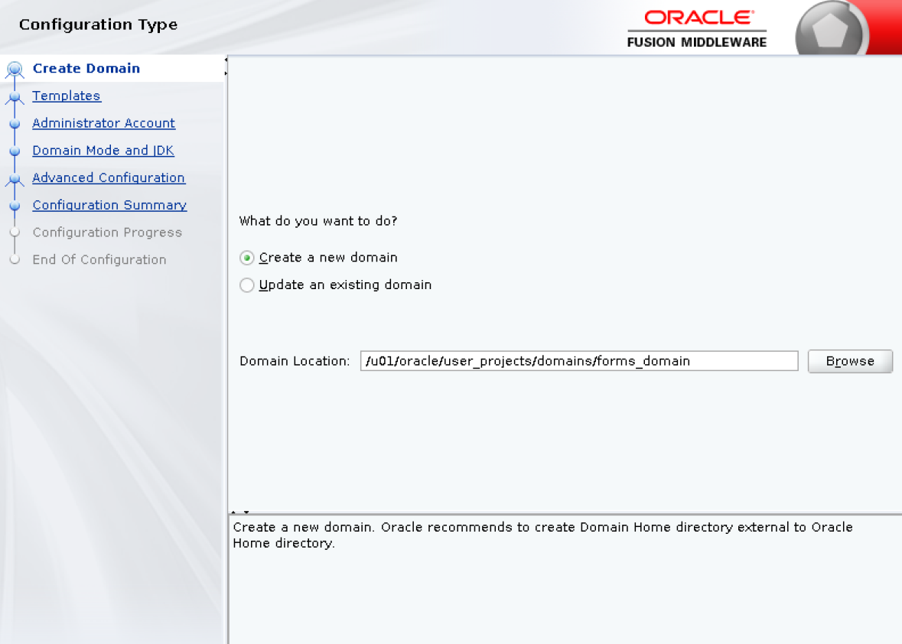
Pantalla 1: Configuration Type - Selecciona "Create a new domain" y verifica la ubicación del dominio
Nota sobre la ubicación del dominio:
La ruta /u01/oracle/user_projects/domains/forms_domain dentro del contenedor corresponde a la carpeta ./domains/forms_domain en el host, gracias al volumen montado en docker-compose.yml. Esto permite que el dominio persista en el sistema de archivos del host.
Haz clic en "Next" para continuar.
En esta pantalla debes seleccionar las plantillas de producto que definirán los componentes y funcionalidades que estarán disponibles en el dominio.
Configuración:
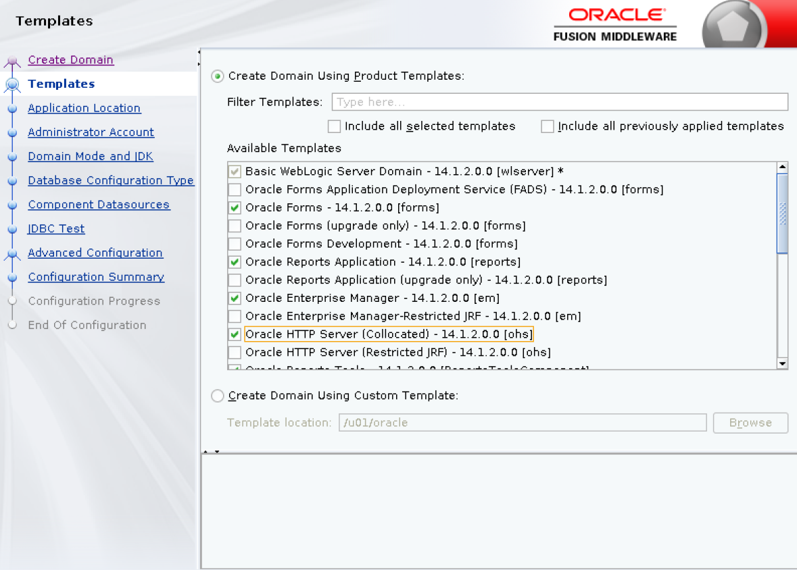
Pantalla 2 (Parte 1): Templates - Plantillas principales: Basic WebLogic Server Domain, Forms, Reports Application, Enterprise Manager y OHS
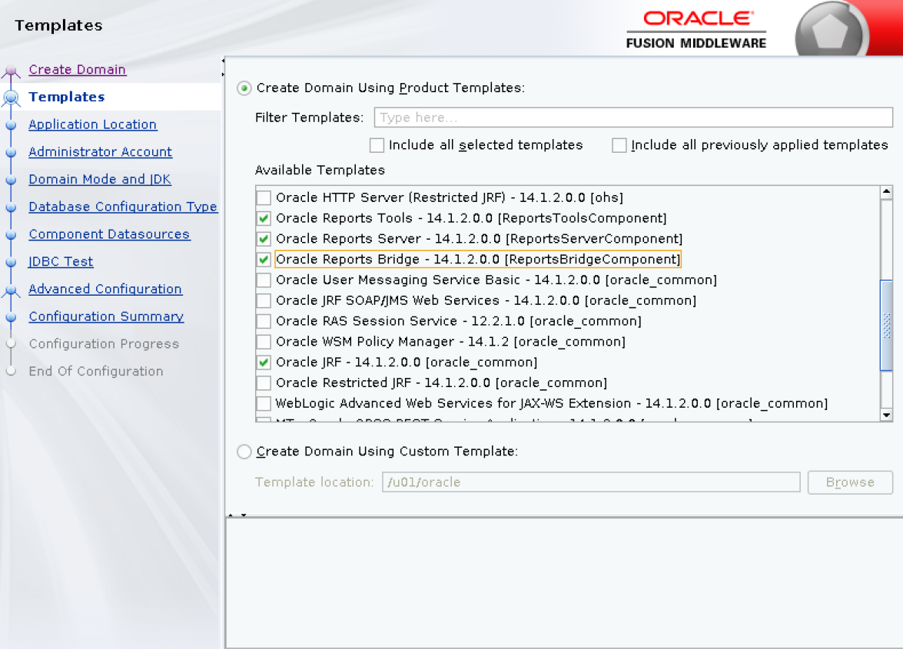
Pantalla 2 (Parte 2): Templates - Plantillas adicionales: Reports Tools, Reports Server, Reports Bridge y Oracle JRF
Resumen de todas las plantillas a seleccionar:
Plantillas no seleccionadas (opcionales):
En la lista también verás otras plantillas que NO debes seleccionar para esta configuración, como:
Estas plantillas son para casos de uso específicos y no son necesarias para la arquitectura distribuida estándar.
Haz clic en "Next" para continuar.
En esta pantalla debes especificar el nombre del dominio y las ubicaciones donde se almacenarán los archivos del dominio y las aplicaciones desplegadas.
Configuración:
forms_domain
/u01/oracle/user_projects/domains
/u01/oracle/user_projects/domains/forms_domain./domains en el host/u01/oracle/user_projects/apps/forms_domain
./app en el host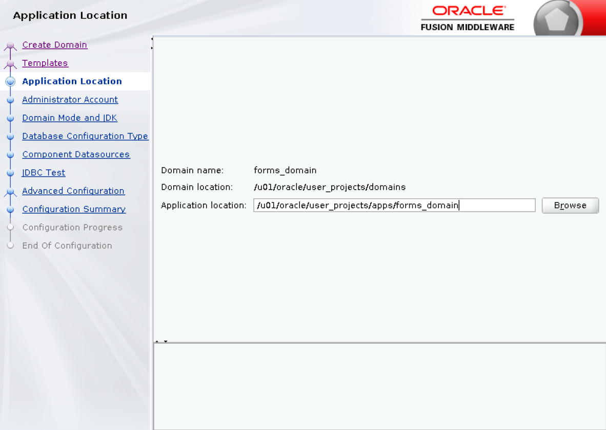
Pantalla 3: Application Location - Configura el nombre del dominio y las ubicaciones para el dominio y las aplicaciones
Nota sobre las ubicaciones:
/u01/oracle/user_projects/domains):
./domains/u01/oracle/user_projects/apps/forms_domain):
./app/forms_domainHaz clic en "Next" para continuar.
En esta pantalla debes configurar las credenciales del usuario administrador del dominio.
Configuración:
weblogicoracle01
oracle01 causa problemas con la inicialización del embedded LDAP durante la creación del dominiot.123456 o weblogic123⚠️ Advertencia sobre la contraseña:
Se ha identificado que usar la contraseña oracle01 durante la creación del dominio puede causar que el embedded LDAP no se inicialice correctamente, resultando en errores de autenticación al intentar iniciar el AdminServer.
Recomendación: Usa una contraseña diferente desde el inicio, como t.123456 o cualquier otra que cumpla con los requisitos de seguridad.
📷 Captura pendiente: falta la imagen de la pantalla Administrator Account. Se agregará en la próxima ejecución del Wizard.
Haz clic en "Next" para continuar.
En esta pantalla se define el modo de operación del dominio y el JDK que usarán los servidores.
Configuración:
/u01/jdk (JDK 17 instalado en la imagen; ver Crear imagen). Normalmente aparece preseleccionado.📷 Captura pendiente: falta la imagen de la pantalla Domain Mode and JDK. Se agregará en la próxima ejecución del Wizard.
Haz clic en "Next" para continuar.
En esta pantalla debes configurar la conexión a la base de datos donde se encuentran los schemas RCU creados previamente. El Wizard usará esta información para configurar automáticamente los datasources necesarios para los componentes del dominio.
Configuración:
Oracle (seleccionado en el dropdown)Oracle's Driver (Thin) for Service connections (seleccionado en el dropdown)192.168.1.109 (IP o hostname de tu servidor de base de datos)ORA193PDB1 (nombre del servicio/PDB de Oracle)33118 (puerto de escucha de la base de datos)DIST_STB
DIST_STBoracle01 o la que hayas configurado)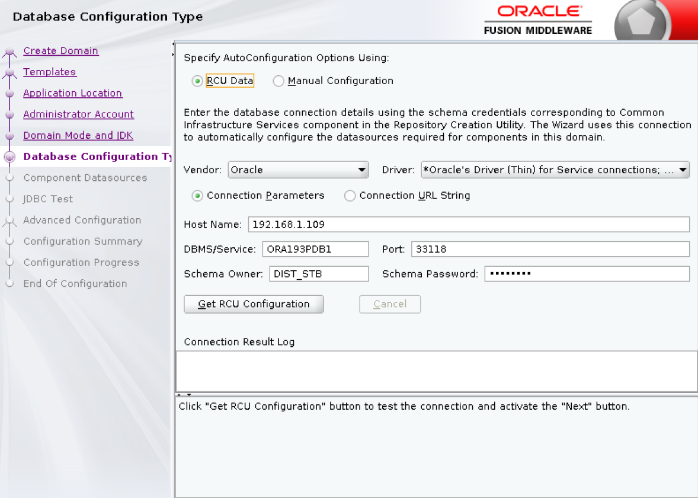
Pantalla 6: Database Configuration Type - Configura los parámetros de conexión a la base de datos donde están los schemas RCU
Importante sobre los schemas RCU:
DIST_STB es el schema de "Service Table" que contiene la información de los componentes RCU instaladosPasos a seguir:
⚠️ Nota sobre la conexión:
Si el contenedor no puede conectarse a la base de datos, verifica que:
Una vez que la conexión sea exitosa, haz clic en "Next" para continuar.
Con la opción RCU Data de la pantalla anterior, el Wizard lee el schema DIST_STB y precarga un datasource por cada schema RCU. En esta pantalla solo hay que revisar que los valores sean correctos.
Configuración (parte superior, aplica a todas las filas marcadas):
OracleOracle's Driver (Thin) for Service connectionsjdbc:oracle:thin:@(description=(address=(host=192.168.1.109)(protocol=tcp)(port=33118))(connect_data=(service_name=ORA193PDB1)(server=dedicated)))Schemas que deben aparecer en la tabla:
| Component Schema | Schema Owner |
|---|---|
| LocalSvcTbl Schema | DIST_STB |
| WLS Runtime Schema | DIST_WLS_RUNTIME |
| WLS Schema | DIST_WLS |
| OPSS Audit Schema | DIST_IAU_APPEND |
| OPSS Audit Viewer Schema | DIST_IAU_VIEWER |
| OPSS Schema | DIST_OPSS |
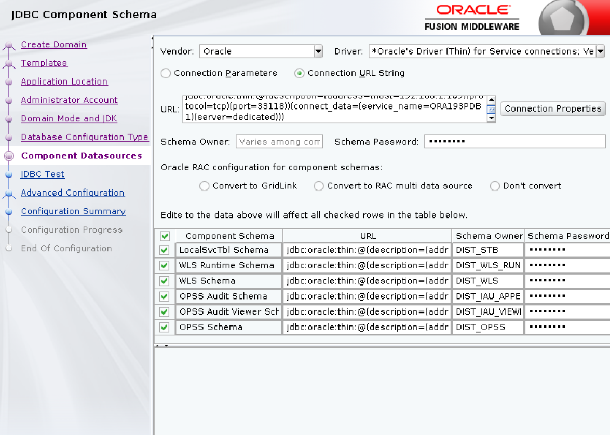
Pantalla 7: Component Datasources - Schemas RCU precargados por el Wizard
Nota: los cambios en la parte superior se aplican a todas las filas marcadas. Si un schema tiene otra contraseña o usuario, desmárcalo o edita su fila directamente en la tabla.
Haz clic en "Next" para continuar.
El Wizard prueba la conexión de cada datasource definido en la pantalla anterior.
Pasos a seguir:
CFGFWK-64213: Test Successful! para cada schema.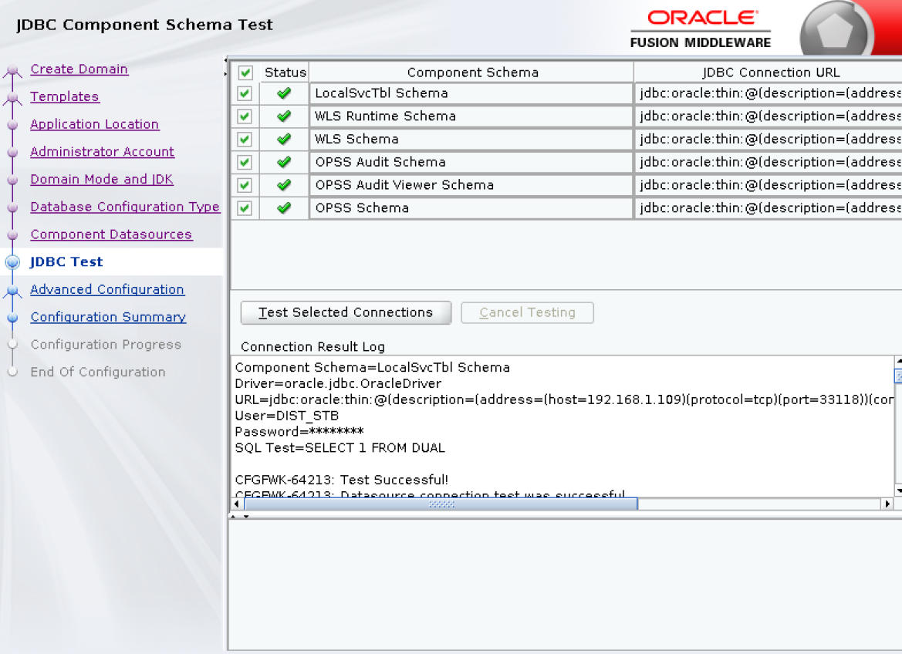
Pantalla 8: JDBC Test - Las 6 conexiones de los schemas RCU probadas con éxito
⚠️ Si alguna conexión falla: revisa en el log el error (por ejemplo ORA-01017 credenciales inválidas, o ORA-12514 servicio desconocido) y vuelve a Component Datasources con "< Back" para corregir la URL, el usuario o la contraseña. No continúes hasta que todas las pruebas sean exitosas.
Haz clic en "Next" para continuar.
Esta pantalla permite seleccionar qué aspectos avanzados del dominio deseas configurar.
Para una arquitectura distribuida, selecciona TODAS las opciones:
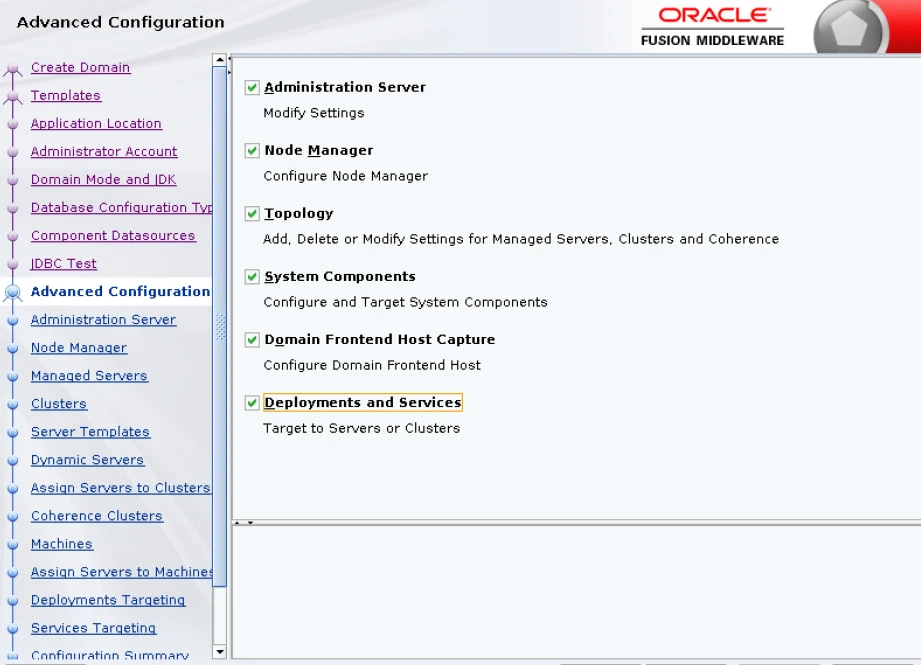
Pantalla 9: Advanced Configuration - Selecciona todas las opciones
Importante: En una arquitectura distribuida, Topology y System Components son esenciales porque te permitirán definir y configurar los servidores que correrán en contenedores separados.
Haz clic en "Next" para continuar.
Esta pantalla permite configurar los detalles del AdminServer.
Configuración recomendada:
AdminServer (mantener el valor por defecto)
All Local Addresses (mantener)
7001 (mantener)9002 (si está habilitado)Unspecified (mantener)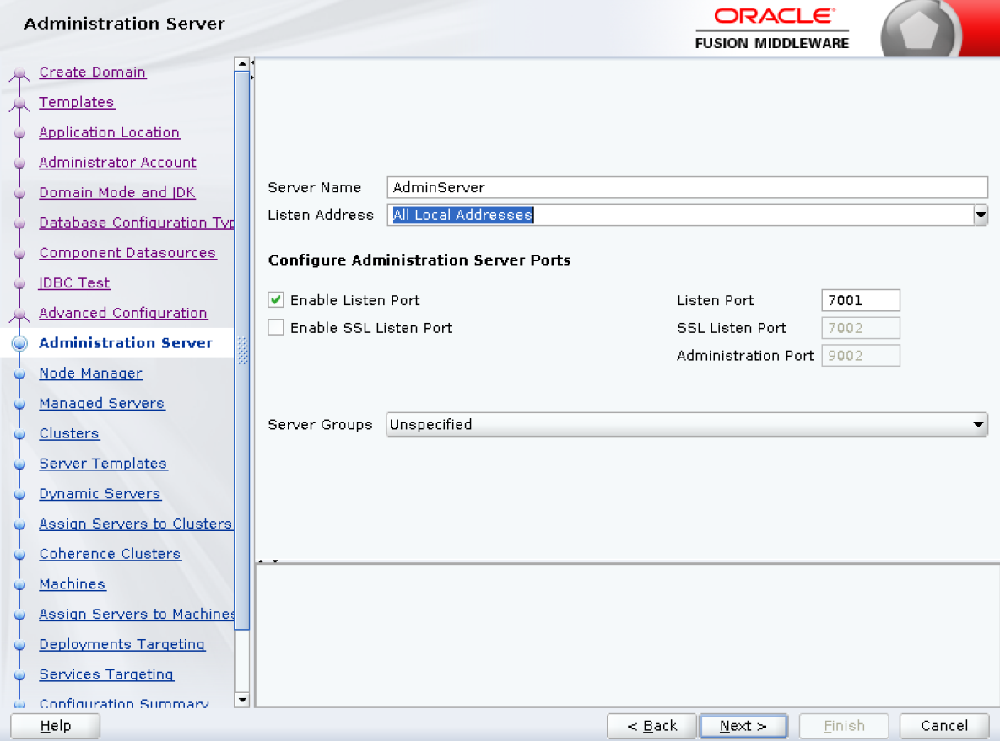
Pantalla 10: Administration Server
Nota: Los puertos configurados aquí deben coincidir con los mapeos endocker-compose.yml:
- Puerto 7001: AdminServer
- Puerto 9002: Administration Port (opcional)
Haz clic en "Next >" para continuar.
Esta pantalla permite configurar el Node Manager, que es esencial para gestionar servidores remotos en una arquitectura distribuida.
Configuración recomendada:
1. Node Manager Topology:
/user_projects/domains/forms_domain/nodemanagerentrypoint.sh2. Node Manager Credentials:
Usa las mismas credenciales del administrador para mantener consistencia y simplificar la gestión:
weblogic⚠️ No uses oracle01 como contraseña del Node Manager ni del administrador. Por la misma razón que se explica en la Pantalla 4, puede impedir que el embedded LDAP se inicialice correctamente. oracle01 solo se usa como contraseña de los schemas RCU (Pantallas 6 y 7).
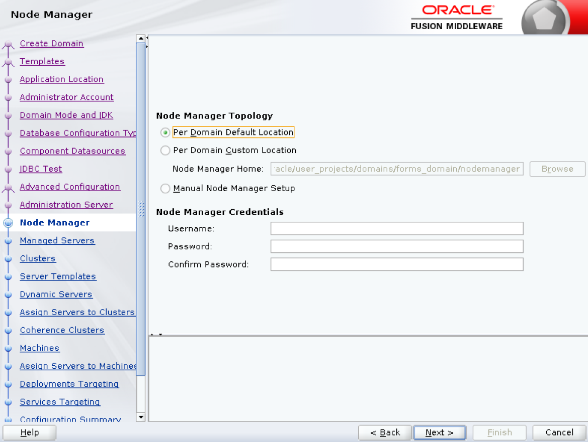
Pantalla 11: Node Manager
Nota:
- Node Manager puede usar credenciales diferentes del administrador, pero usar las mismas simplifica la gestión en entornos Docker
- El Node Manager se ubicará en
dist/domains/forms_domain/nodemanager/(en el host)- El puerto del Node Manager (5556) ya está configurado en
docker-compose.yml
Haz clic en "Next >" para continuar.
Esta pantalla muestra los Managed Servers que se crearán automáticamente para Forms y Reports.
¿Qué es un Managed Server?
Un dominio WebLogic tiene dos tipos de servidores, cada uno con su propia JVM:
/console), Enterprise Manager (/em) y la configuración central. No ejecuta las aplicaciones de negocio.Al seleccionar las plantillas de Forms y Reports en la Pantalla 2, el Wizard crea un Managed Server para cada producto. En esta arquitectura cada uno corre en su propio contenedor:
| Managed Server | Contenedor | Aplicación desplegada | URL de acceso | Server Group |
|---|---|---|---|---|
WLS_FORMS | weblogic-forms | formsapp | http://<host>:9001/forms/frmservlet | FORMS-MAN-SVR |
WLS_REPORTS | weblogic-reports | reports | http://<host>:9012/reports/rwservlet | REPORTS-APP-SERVERS |
WLS_FORMS (Oracle Forms Services):
formsapp, que contiene el Forms Listener Servlet (/forms/frmservlet). Es el punto de entrada de los usuarios, que se conectan mediante Java Web Start o FSAL (Forms Standalone Launcher).frmweb (Forms Runtime) que ejecuta los módulos compilados .fmx, .mmx y .plx y se conecta a la base de datos de la aplicación.frmweb es un binario nativo, este servidor depende de las librerías compartidas generadas con genshlib y de libaio, que ya incluye la imagen (ver Crear imagen).formsweb.cfg (parámetros de cada aplicación Forms) y en default.env (variables de entorno del runtime, como FORMS_PATH y TNS_ADMIN).WLS_REPORTS (Oracle Reports Services):
reports, que expone el servlet /reports/rwservlet para solicitar la ejecución de reportes..rdf y .rep, gestiona la cola de trabajos y genera la salida (PDF, HTML, etc.).RUN_REPORT_OBJECT o WEB.SHOW_DOCUMENT apuntando a rwservlet. También puede llamarse directamente por URL.Server Groups: el valor FORM... o REPO... que se ve truncado en la columna "Server Groups" corresponde a FORMS-MAN-SVR y REPORTS-APP-SERVERS. Esos grupos le indican al Wizard qué aplicaciones, librerías y servicios desplegar en cada servidor. No los cambies: si un Managed Server queda sin su grupo, no tendrá desplegado formsapp o reports.
Si solo necesitas uno de los dos productos, igual conviene mantener ambos servidores. Un servidor que no se arranca no consume recursos, y agregarlo después requiere reconfigurar el dominio.
Configuración predefinida:
1. WLS_FORMS:
WLS_FORMSAll Local Addresses (mantener)9001 (puerto estándar para Forms)9501DisabledFORM... (mantener)2. WLS_REPORTS:
WLS_REPORTSAll Local Addresses (mantener)9012 (valor por defecto en 14.1.2, mantener)
docker-compose.yml (MANAGED_SERVER_PORT=9012 y el mapeo 9012:9012) y scripts/reports/entrypoint.sh esperan este puerto9512DisabledREPO... (mantener)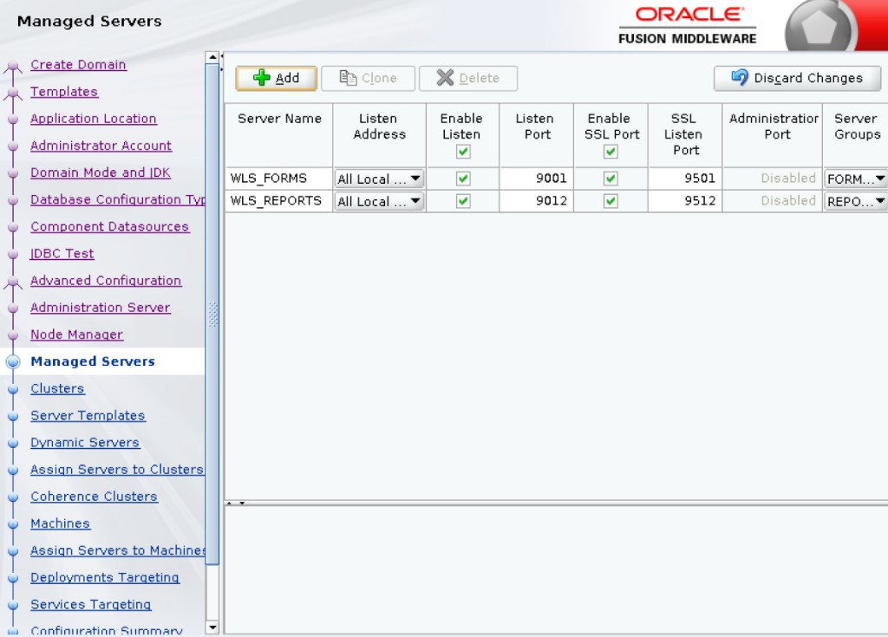
Pantalla 12: Managed Servers - WLS_FORMS (9001/9501) y WLS_REPORTS (9012/9512), con sus Server Groups FORMS-MAN-SVR y REPORTS-APP-SERVERS
Nota:
- Estos Managed Servers correrán en contenedores separados (Forms y Reports)
- Los puertos configurados aquí deben coincidir con los mapeos en
docker-compose.ymlcuando crees los servicios- Para desarrollo, puedes desmarcar "Enable SSL Port" en ambos servidores
Haz clic en "Next >" para continuar.
Esta pantalla permite configurar clusters para alta disponibilidad y balanceo de carga.
Configuración recomendada:
Nota:
- Los clusters solo son necesarios si quieres alta disponibilidad o balanceo de carga automático
- Para una arquitectura distribuida básica (un contenedor para Forms y otro para Reports), no es necesario crear clusters
Haz clic en "Next >" para continuar.
Esta pantalla muestra plantillas de servidor que se pueden usar para crear servidores dinámicos o aplicar configuraciones comunes.
Configuración recomendada:
wsm-cache-server-temp
7100 (configuración por defecto)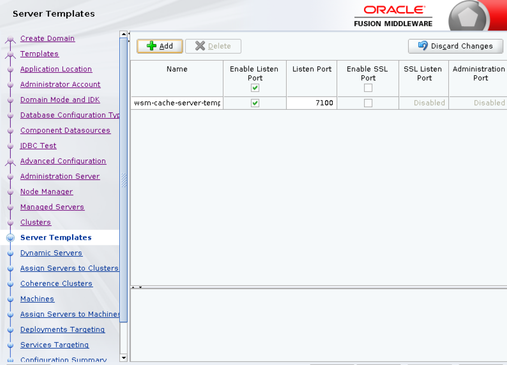
Pantalla 14: Server Templates
Haz clic en "Next >" para continuar.
Esta pantalla permite configurar servidores dinámicos que se crean automáticamente en clusters.
Configuración recomendada:
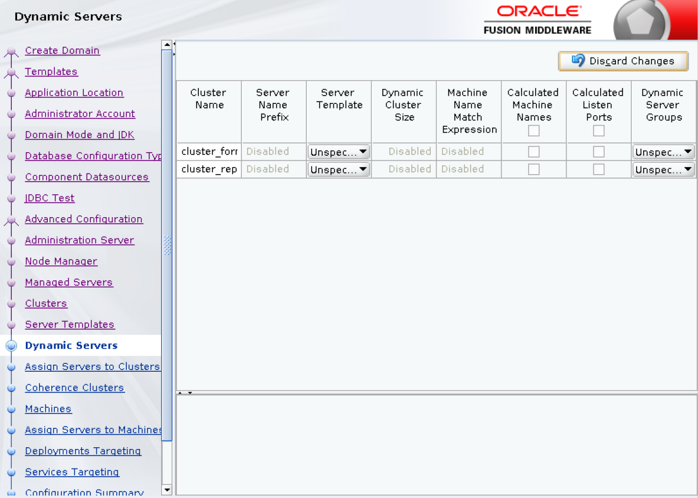
Pantalla 15: Dynamic Servers
Nota: Los Dynamic Servers se usan para escalado dinámico. Para tu arquitectura distribuida con contenedores fijos, no es necesario configurarlos.
Haz clic en "Next >" para continuar.
Esta pantalla permite asignar servidores gestionados a clusters para alta disponibilidad y balanceo de carga.
Configuración recomendada:
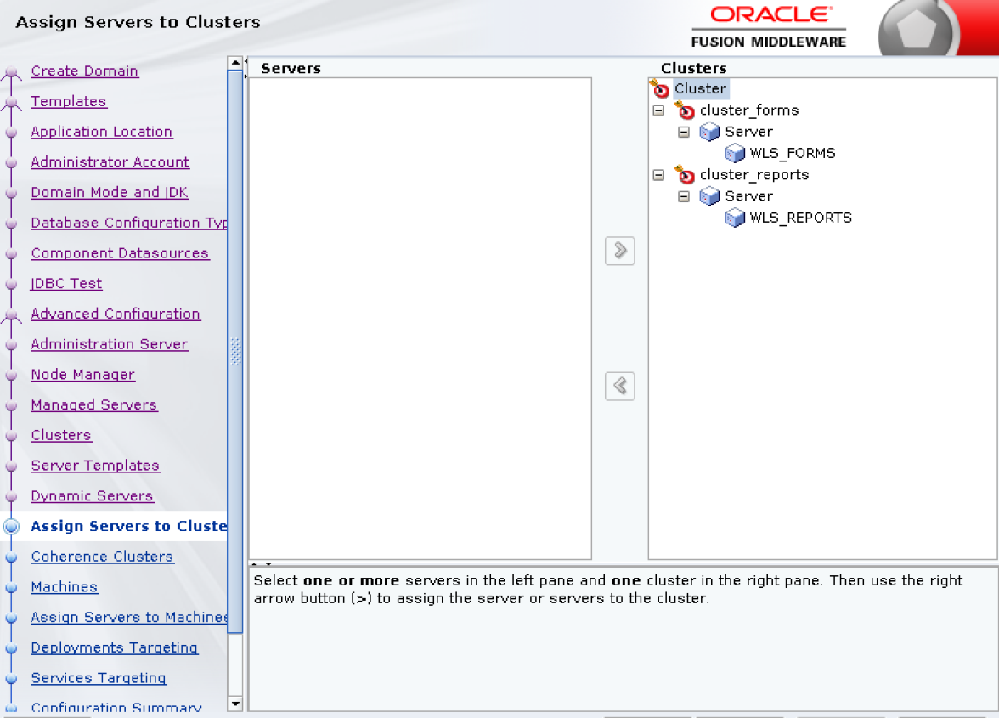
Pantalla 16: Assign Servers to Clusters
Haz clic en "Next >" para continuar.
Esta pantalla permite configurar clusters de Oracle Coherence para caché distribuido.
Configuración recomendada:
defaultCoherenceCluster
7574 (configuración por defecto)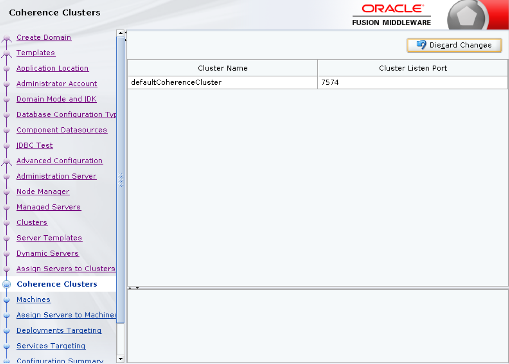
Pantalla 17: Coherence Clusters
Haz clic en "Next >" para continuar.
Una Machine es la representación lógica de un host donde corre un Node Manager. WebLogic la usa para saber a qué Node Manager pedirle que arranque o detenga cada servidor. En esta arquitectura cada contenedor es un host distinto, así que hay que crear tres Machines, una por contenedor. En la Pantalla 19 se les asigna cada servidor.
📌 Regla: una Machine por cada servidor. En esta arquitectura cada servidor (AdminServer, WLS_FORMS, WLS_REPORTS) corre en su propio contenedor, así que cada uno necesita su propia Machine, con el Node Manager apuntando a ese contenedor. Si más adelante se agrega otro Managed Server en otro contenedor, también necesitará su propia Machine.
Por qué importa: por defecto el Wizard crea solo AdminServerMachine y le asigna todos los servidores. En el dominio original se dejó así, y WLS_FORMS quedó atascado en STANDBY con un timeout de Coherence (RequestTimeoutException ... Name=Cluster): el servidor corría en weblogic-forms pero su Machine apuntaba a weblogic-admin.
En la pestaña Machine, usa "Add" para crear las tres. Si el Wizard ya muestra una Machine por defecto, renómbrala como AdminServerMachine.
| Name | Node Manager Listen Address | Node Manager Listen Port | Servidor que alojará |
|---|---|---|---|
AdminServerMachine | weblogic-admin | 5556 | AdminServer |
FormsMachine | weblogic-forms | 5556 | WLS_FORMS |
ReportsMachine | weblogic-reports | 5556 | WLS_REPORTS |
⚠️ IMPORTANTE para arquitectura distribuida en Docker:
container_name en docker-compose.yml). No uses localhost: cada contenedor es un host distinto y desde el AdminServer localhost apunta a sí mismo.5556 en las tres. Es el puerto dentro de cada contenedor. En el host, docker-compose.yml los publica como 5556 (admin), 5557 (forms) y 5558 (reports) para que no choquen, pero entre contenedores se usa siempre 5556.SSL (valor por defecto). Usa el mismo tipo en las tres Machines.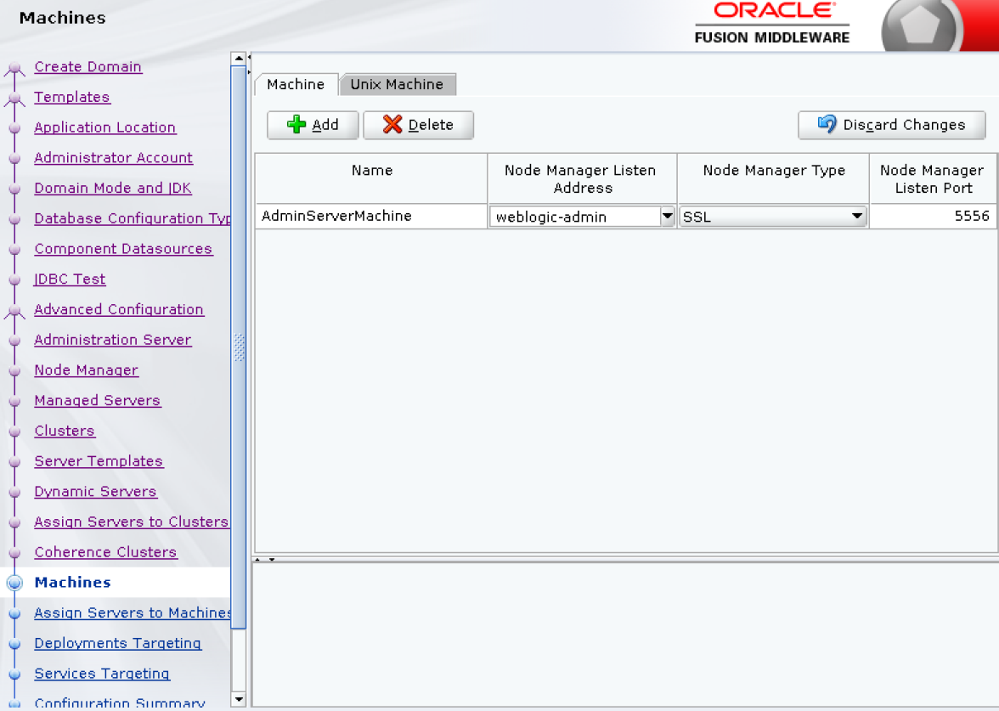
Pantalla 18: Machines - AdminServerMachine con Node Manager Listen Address weblogic-admin, tipo SSL y puerto 5556
📷 Captura pendiente: la imagen muestra solo AdminServerMachine. Falta una captura con FormsMachine y ReportsMachine también creadas, según la tabla.
Cómo verificar los nombres de los contenedores:
# Ver en docker-compose.yml
grep "container_name" dist/docker-compose.yml
# container_name: weblogic-admin
# container_name: weblogic-forms
# container_name: weblogic-reportsHaz clic en "Next >" para continuar.
Esta pantalla asigna cada servidor a la Machine creada en la Pantalla 18. Así, el AdminServer sabe a qué Node Manager pedirle que arranque cada Managed Server.
📌 Regla: cada servidor en su propia Machine. Ninguna Machine debe tener más de un servidor, y cada servidor debe estar en la Machine del contenedor donde va a correr. No dejes WLS_FORMS ni WLS_REPORTS en AdminServerMachine, aunque el Wizard los asigne ahí por defecto.
Pasos a seguir, para cada fila de la tabla:
> (flecha derecha) para asignarlo.| Servidor | Machine | Contenedor |
|---|---|---|
AdminServer | AdminServerMachine | weblogic-admin |
WLS_FORMS | FormsMachine | weblogic-forms |
WLS_REPORTS | ReportsMachine | weblogic-reports |
Resultado esperado en el panel "Machines":
AdminServerMachine
└── AdminServer
FormsMachine
└── WLS_FORMS
ReportsMachine
└── WLS_REPORTSNota: por defecto el Wizard asignaWLS_FORMSyWLS_REPORTSaAdminServerMachine, como se ve en la captura. Desasígnalos con el botón<y asígnalos a su Machine. Los system components (forms1,ohs1) no se asignan aquí sino en la Pantalla 23.
Si el dominio ya se creó con todos los servidores enAdminServerMachine, como pasó con el dominio original, se corrige sin recrearlo. Con el AdminServer en marcha, ejecuta los scripts WLST que crean cada Machine y reasignan su servidor:Se ejecutan desde los contenedoresdocker compose exec forms /u01/oracle/oracle_common/common/bin/wlst.sh /u01/oracle/scripts/create-forms-machine.py docker compose exec reports /u01/oracle/oracle_common/common/bin/wlst.sh /u01/oracle/scripts/create-reports-machine.pyformsyreports, porque cada uno monta su carpetascripts/forms/oscripts/reports/en/u01/oracle/scripts. Se conectan al AdminServer port3://weblogic-admin:7001. Luego reiniciaWLS_FORMSyWLS_REPORTS. Los scripts tienen la contraseña del administrador escrita en la variableADMIN_PASSWORD. Ajústala antes de ejecutarlos.
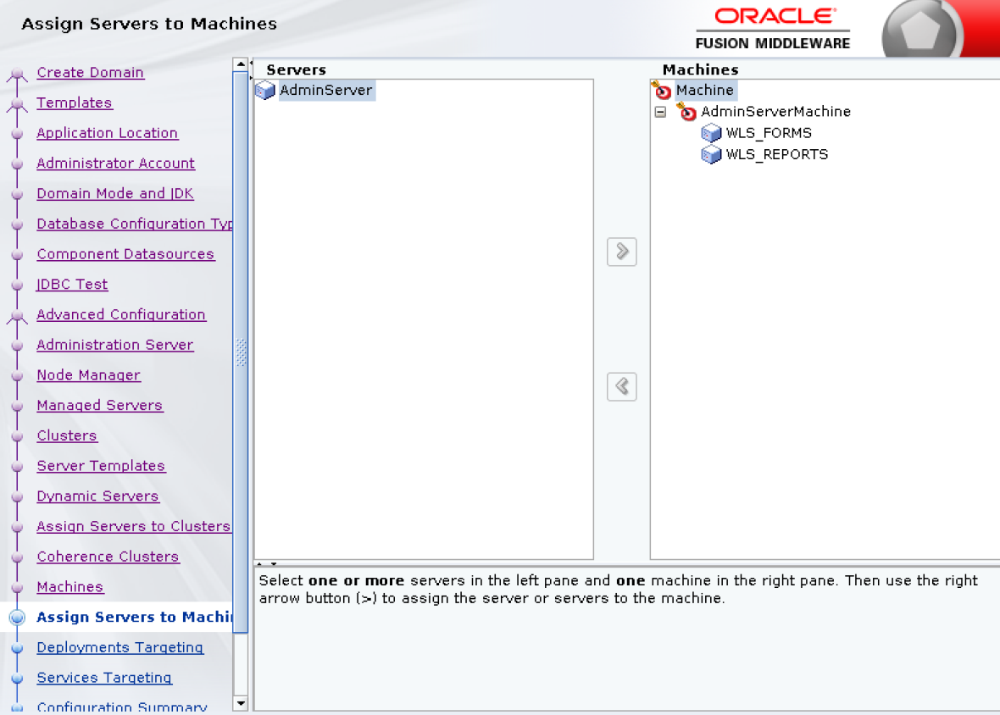
Pantalla 19: Assign Servers to Machines - Estado inicial: el Wizard asigna WLS_FORMS y WLS_REPORTS a AdminServerMachine y deja AdminServer sin asignar
📷 Captura pendiente: falta una captura con la asignación final de la tabla (cada servidor en su Machine).
Haz clic en "Next >" para continuar.
Esta pantalla permite configurar los componentes del sistema como Forms, Reports y OHS.
Configuración recomendada:
Componente existente: forms1
forms1 (mantener)FORMS (mantener)3600 (1 hora, mantener)0 (mantener)Agregar componente OHS:
ohs1OHS del dropdown3600 (1 hora) o el valor que prefieras0Sobre Reports:
WLS_REPORTS ya está creado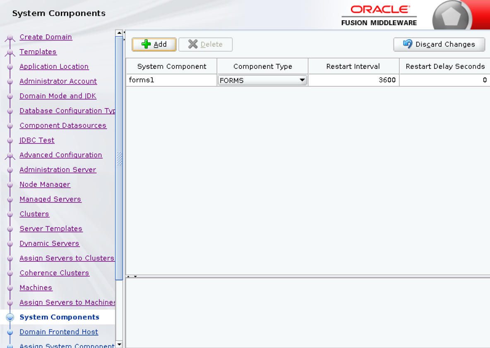
Pantalla 20: System Components - forms1 y agregar ohs1
Haz clic en "Next >" para continuar.
Esta pantalla permite configurar los detalles del componente OHS (ohs1) que agregaste en la pantalla anterior.
Configuración recomendada:
ohs1 (ya seleccionado)127.0.0.1 (mantener por ahora)7779 (mantener)All Local Addresses7777 (mantener)4443 (mantener)http://localhost:7777 (mantener)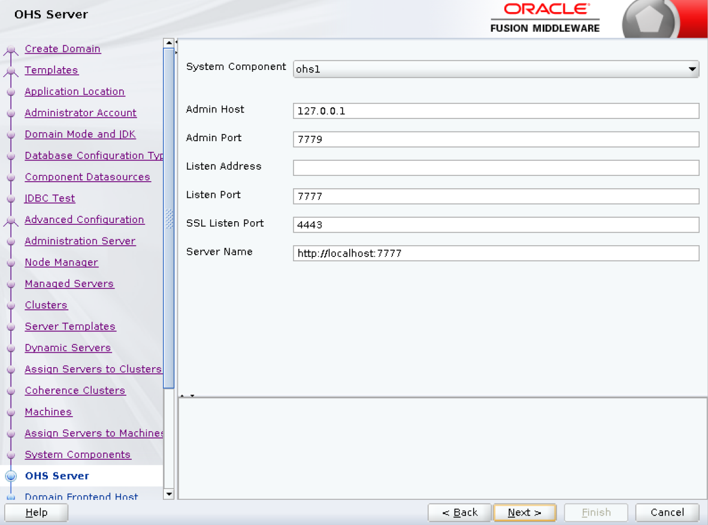
Pantalla 21: OHS Server
Nota:
- El contenedor OHS (
weblogic-ohs) aún no está creado endocker-compose.yml(está pendiente)- Esta configuración inicial es válida para empezar
- Cuando crees el servicio OHS, podrás ajustar Admin Host y ServerName si es necesario
Haz clic en "Next >" para continuar.
Esta pantalla permite configurar el host frontend del dominio, que se usa para generar URLs correctas cuando hay proxy o load balancer.
Configuración recomendada:
http://localhost:7777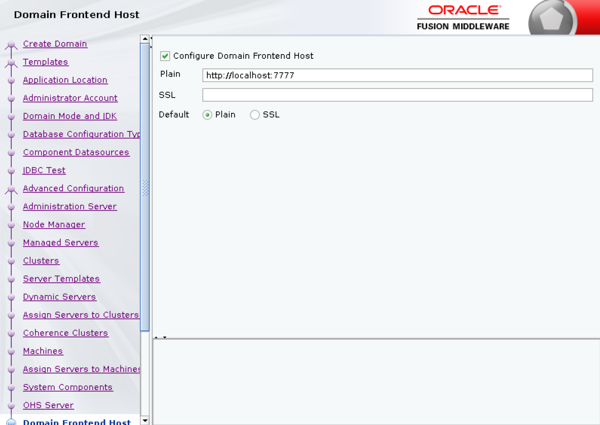
Pantalla 22: Domain Frontend Host
Haz clic en "Next >" para continuar.
Esta pantalla permite asignar los componentes del sistema (Forms, Reports, OHS) a las máquinas lógicas definidas anteriormente.
Pasos a seguir:
ohs1 a AdminServerMachine:
ohs1 en el panel izquierdo "SystemComponent"AdminServerMachine en el panel derecho "Machines"> (flecha derecha) para asignarResultado esperado:
AdminServerMachine debería contener:
forms1 (ya asignado)ohs1 (recién asignado)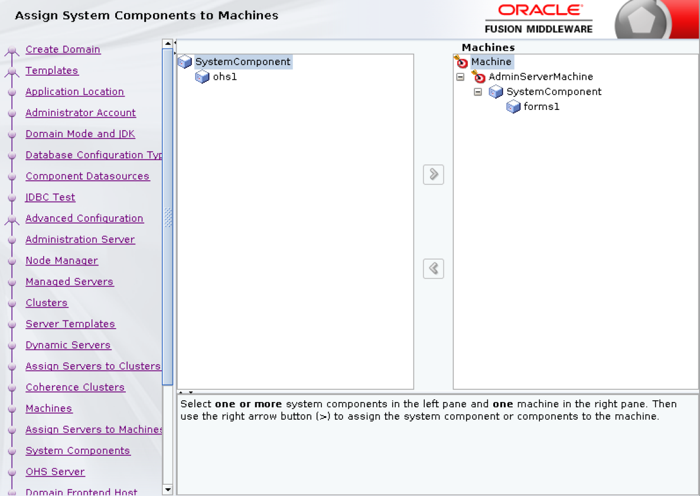
Pantalla 23: Assign System Components to Machines
Haz clic en "Next >" para continuar.
Esta pantalla permite asignar aplicaciones y librerías (deployments) a servidores o clusters específicos.
Configuración recomendada:
AdminServer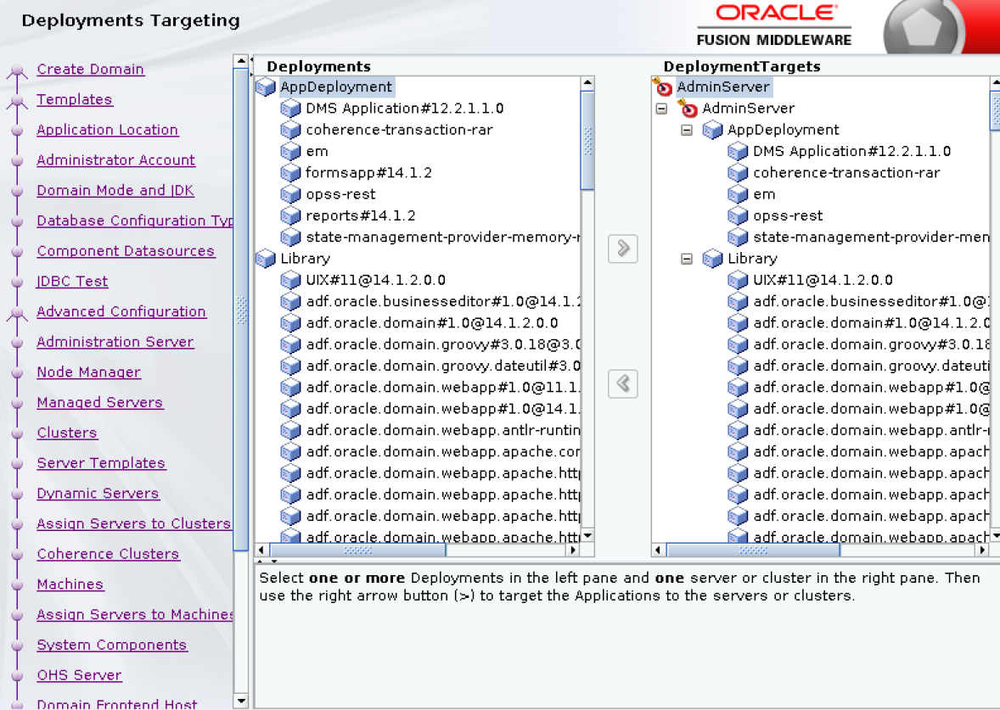
Pantalla 24: Deployments Targeting
Nota: Para la configuración inicial, dejar los deployments enAdminServeres válido. Más adelante puedes reasignarformsapp#14.1.2aWLS_FORMSyreports#14.1.2aWLS_REPORTSdesde la consola de administración.
Haz clic en "Next >" para continuar.
Nota sobre los datasources de OPSS: el Wizard no tiene una pantalla aparte para configurar los datasources de OPSS. Se cargan en la Pantalla 7 (Component Datasources) a partir de los schemas RCU y se validan en la Pantalla 8 (JDBC Test):
| Datasource | Schema |
|---|---|
opss-data-source | DIST_OPSS |
opss-audit-DBDS | DIST_IAU_APPEND |
opss-audit-viewDS | DIST_IAU_VIEWER |
Si hay que corregir un usuario, una URL o una contraseña, vuelve a la Pantalla 7 con "< Back".
Esta pantalla permite asignar servicios del sistema (JDBC, Startup Classes, Shutdown Classes, etc.) a servidores o clusters específicos.
Configuración recomendada:
AdminServer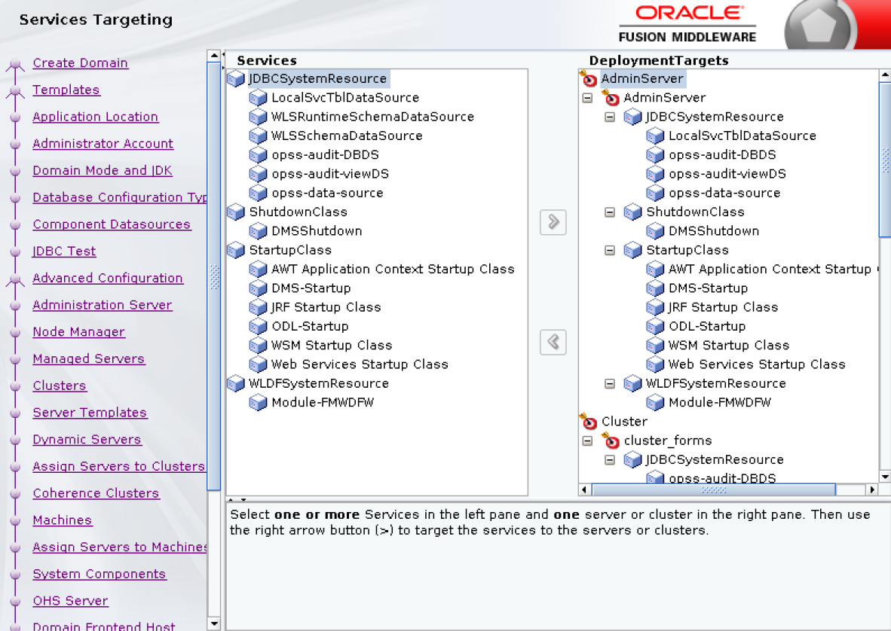
Pantalla 25: Services Targeting
Haz clic en "Next >" para continuar.
Esta es la última pantalla antes de crear el dominio. Muestra un resumen completo de toda la configuración.
Vista del dominio:
forms_domain/u01/oracle/user_projects/domains/forms_domainWLS_FORMS, WLS_REPORTSPlantillas incluidas:
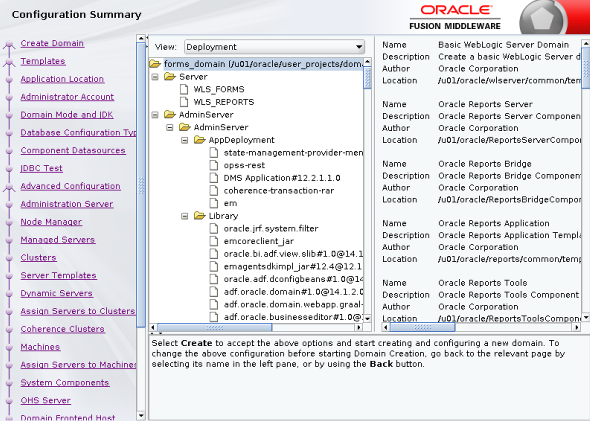
Pantalla 26: Configuration Summary
Acción final:
Nota:
Haz clic en "Create" para iniciar la creación del dominio.
Esta pantalla aparece inmediatamente después de hacer clic en "Create" y muestra el progreso de la creación del dominio.
Elementos de la pantalla:
1. Barra de progreso:
2. Lista de tareas completadas:
3. Panel de navegación (izquierda):
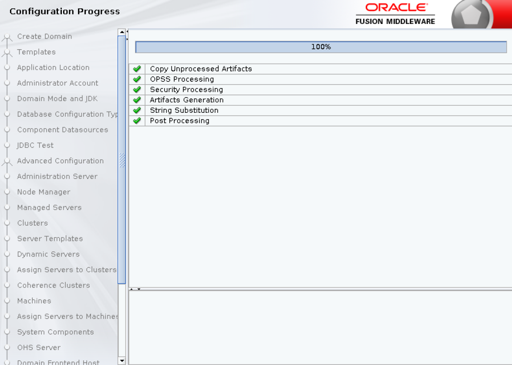
Pantalla 27: Configuration Progress - Progreso de creación del dominio
Qué esperar:
Nota:
/u01/oracle/cfgtoollogs/ dentro del contenedorUna vez que todas las tareas estén completadas (100%), el wizard mostrará un mensaje de éxito y podrás hacer clic en "Next" o "Finish" para cerrar el wizard.
Esta es la pantalla final del Configuration Wizard. Confirma que el dominio ha sido creado exitosamente y proporciona información importante sobre el dominio creado.
Elementos de la pantalla:
1. Mensaje de éxito:
forms_domain Creation Succeeded"2. Domain Location (Ubicación del Dominio):
/u01/oracle/user_projects/domains/forms_domaindist/domains/forms_domain en el host gracias al bind mount configurado en docker-compose.yml./dist/domains/forms_domain/3. Admin Server URL:
http://weblogic-admin:7001/consoleweblogic-admin: Hostname del contenedor Admin (confirmando la configuración correcta)7001: Puerto de escucha del AdminServer (configurado en la pantalla 10, Administration Server)/console: Context root estándar de la consola de administración de WebLogichttp://localhost:7001/console (si el puerto está mapeado)4. Nota importante sobre OHS:
"After successful domain creation, you must run the WLST command ohs_updateInstances() to complete all the required steps. Please refer to OHS product documentation for more details."
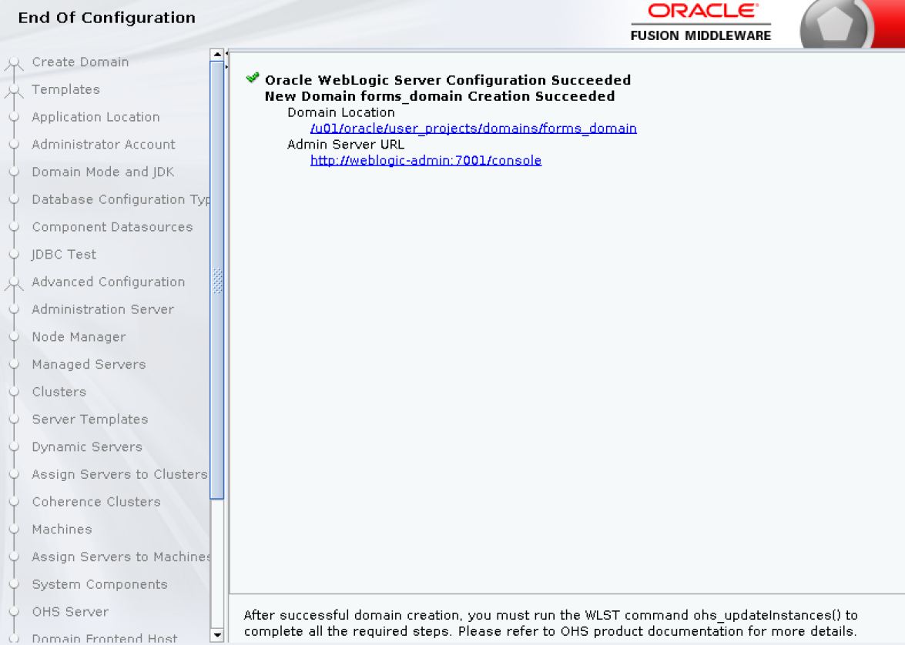
Pantalla 28: End Of Configuration - Dominio creado exitosamente
Acción final:
dist/domains/forms_domain/ (en el host)Nota:
ls -la dist/domains/forms_domain/ohs_updateInstances() desde WLST antes de iniciar OHSweblogic-admin), que es correcto para comunicación dentro de la red DockerEl wizard creará el dominio. Esto puede tomar varios minutos. Verás el progreso en la ventana del wizard.
Una vez completado, verifica que el dominio existe:
# Verificar carpeta del host
ls -la dist/domains/forms_domain/
# O desde dentro del contenedor (si aún está corriendo)
docker compose exec admin ls -la /u01/oracle/user_projects/domains/Deberías ver el directorio forms_domain.
adminAl pulsar Finish el Wizard se cierra y el comando run-config-wizard.sh termina. El contenedor admin sigue corriendo, pero su script de entrada (entrypoint_persistente.sh) continúa en “modo configuración”: solo comprueba si existe el dominio al arrancar.
Reinicia el contenedor para que detecte el dominio recién creado e inicie Node Manager y el AdminServer:
docker compose restart admin
docker compose logs -f admindocker compose psdocker compose exec admin pgrep x11vncdocker-compose exec admin pgrep Xvfbdocker-compose exec admin cat /tmp/xvfb.log
docker-compose exec admin cat /tmp/x11vnc.logDIST):
docker compose exec admin /u01/oracle/scripts/check-rcu-schemas.sh/u01/oracle/cfgtoollogs/Una vez creado el dominio, puedes iniciar el AdminServer:
cd dist
docker compose up adminVerifica que el dominio existe en la carpeta del host:
cd dist
ls -la domains/forms_domain/Deberías ver la estructura del dominio con carpetas como:
bin/ - Scripts de inicioconfig/ - Configuración del dominionodemanager/ - Configuración de Node Managerservers/ - Configuración de servidoressecurity/ - Archivos de seguridadAsegúrate de que los permisos sean correctos:
# Verificar permisos
ls -la domains/forms_domain/
# Si es necesario, ajustar permisos (desde el host)
sudo chown -R $(id -u):$(id -g) domains/forms_domain/El AdminServer es el servidor central que gestiona el dominio. Debe iniciarse primero antes de cualquier otro servidor.
cd dist
docker compose up -d adminO si prefieres ver los logs en tiempo real:
docker compose up adminEspera a que el servidor inicie completamente. Busca en los logs el mensaje:
<Server state changed to RUNNING>Ver logs:
docker compose logs -f adminVerificar estado del contenedor:
docker compose psHealth check:
docker compose exec admin /u01/oracle/scripts/healthcheck.shUna vez que el AdminServer esté corriendo, puedes acceder a la consola:
http://localhost:7001/consoleweblogicNota: Si no puedes acceder desde el navegador, verifica que el puerto 7001 esté mapeado en docker-compose.yml y que el contenedor esté corriendo.
Si configuraste Oracle HTTP Server (OHS) como System Component durante el Configuration Wizard, debes ejecutar este comando WLST para completar la configuración.
cd dist
docker compose exec admin /u01/oracle/oracle_common/common/bin/wlst.shDentro de WLST, ejecuta:
connect('weblogic', '<ADMIN_PASSWORD>', 't3://weblogic-admin:7001')
ohs_updateInstances()
disconnect()
exit()Reemplaza <ADMIN_PASSWORD> por la contraseña del administrador definida en la Pantalla 4.
Script completo:
docker compose exec admin /u01/oracle/oracle_common/common/bin/wlst.sh <<EOF
connect('weblogic', '<ADMIN_PASSWORD>', 't3://weblogic-admin:7001')
ohs_updateInstances()
disconnect()
exit()
EOFNota: Este comando actualiza las instancias de OHS en el dominio. Es obligatorio si configuraste OHS durante el wizard.
Desde la consola de administración (http://localhost:7001/console):
opss-audit-DBDSopss-data-sourceopss-audit-viewDSDesde la consola:
AdminServer (estado: RUNNING)WLS_FORMS (estado: SHUTDOWN - esto es normal, aún no se ha iniciado)WLS_REPORTS (estado: SHUTDOWN - esto es normal, aún no se ha iniciado)forms1 (tipo: FORMS)ohs1 (tipo: OHS) - si lo configuraste
Para iniciar los Managed Servers (Forms y Reports) desde contenedores separados,
cada máquina lógica del dominio tiene su propio Node Manager. El AdminServer se
conecta a ellos por hostname en la red weblogic-network.
| Máquina (dominio) | Contenedor / hostname | Directorio Node Manager | Puerto interno | Puerto en el host |
|---|---|---|---|---|
AdminServerMachine |
weblogic-admin |
nodemanager/ |
5556 | 5556 |
FormsMachine |
weblogic-forms |
nodemanager_forms/ |
5556 | 5557 |
ReportsMachine |
weblogic-reports |
nodemanager_reports/ |
5556 | 5558 |
docker-compose.yml publica Forms y Reports como
5557:5556 y 5558:5556 para no chocar con el del admin.weblogic-forms:5556),
no localhost.nodemanager.properties con
ListenAddress apuntando al hostname del contenedor, de modo que el
AdminServer pueda gestionar remotamente los Managed Servers.El Node Manager del AdminServer ya está configurado en el dominio. Verifica:
# Ver configuración de Node Manager (AdminServerMachine)
cat domains/forms_domain/nodemanager/nodemanager.properties
# Cuando existan forms/reports, también:
# cat domains/forms_domain/nodemanager_forms/nodemanager.properties
# cat domains/forms_domain/nodemanager_reports/nodemanager.propertiesEl Node Manager debería estar corriendo en el contenedor weblogic-admin:
docker compose exec admin ps aux | grep nodemanagerO verifica el puerto:
docker compose exec admin netstat -tlnp | grep 5556forms y reports en Docker Compose
Con el dominio creado, amplía dist/docker-compose.yml con los Managed
Servers. Siguen el mismo patrón que admin (misma imagen, red
weblogic-network y bind mounts de domains/app)
y añaden variables del Managed Server, depends_on: admin,
healthcheck y el mapeo de Node Manager en el host.
| Servicio | Contenedor / hostname | Managed Server | Puertos clave (host) |
|---|---|---|---|
forms |
weblogic-forms |
WLS_FORMS |
9001, 9501, 9991, NM 5557 |
reports |
weblogic-reports |
WLS_REPORTS |
9012, 9512, 9992, NM 5558 |
formsAñadir al mismo docker-compose.yml (junto al servicio admin):
forms:
image: image_forms_14.1.2:r1
container_name: weblogic-forms
hostname: weblogic-forms
user: oracle
networks:
- weblogic-network
volumes:
- ./domains:/u01/oracle/user_projects/domains
- ./app:/u01/oracle/user_projects/apps
- ./scripts/forms:/u01/oracle/scripts
environment:
- ORACLE_HOME=/u01/oracle
- DOMAIN_NAME=forms_domain
- DOMAIN_HOME=/u01/oracle/user_projects/domains/forms_domain
- ADMIN_SERVER_NAME=AdminServer
- ADMIN_SERVER_HOST=weblogic-admin
- ADMIN_SERVER_PORT=7001
- ADMIN_USER=weblogic
- ADMIN_PASSWORD=********
- MANAGED_SERVER_NAME=WLS_FORMS
- MANAGED_SERVER_PORT=9001
- JAVA_OPTIONS=-Dforms.instance=forms1
- FORMS_INSTANCE=/u01/oracle/user_projects/domains/forms_domain/config/fmwconfig/components/FORMS/instances/forms1
- TNS_ADMIN=/u01/oracle/user_projects/domains/forms_domain/config/fmwconfig
- FRMCMP=/u01/oracle/user_projects/domains/forms_domain/config/fmwconfig/components/FORMS/instances/forms1/bin/frmcmp_batch.sh
- FORMS_PATH=/u01/oracle/user_projects/apps/forms_app/bin:/u01/oracle/user_projects/apps/forms_app/src:/u01/oracle/forms
- FORMS_MODULE_PATH=/u01/oracle/user_projects/apps/forms_app/bin:/u01/oracle/forms
- LD_LIBRARY_PATH=/u01/oracle/lib:/u01/oracle/oracle_common/lib
- PATH=/u01/oracle/bin:/u01/oracle/oracle_common/bin:${PATH}
- PROC=/u01/oracle/bin/proc
- PCSCFG=/u01/oracle/precomp/admin/pcscfg.cfg
- PROC_INCLUDE=/u01/oracle/precomp/public
- CC=/usr/bin/gcc
ports:
- "9001:9001" # WLS_FORMS HTTP
- "9501:9501" # WLS_FORMS HTTPS
- "9991:9991" # Administration Port
- "5557:5556" # Node Manager FormsMachine
command: ["/u01/oracle/scripts/entrypoint.sh"]
depends_on:
- admin
healthcheck:
test: ["CMD", "nc", "-z", "localhost", "9001"]
interval: 30s
timeout: 10s
retries: 3
start_period: 180sreports reports:
image: image_forms_14.1.2:r1
container_name: weblogic-reports
hostname: weblogic-reports
user: oracle
networks:
- weblogic-network
volumes:
- ./domains:/u01/oracle/user_projects/domains
- ./app:/u01/oracle/user_projects/apps
- ./scripts/reports:/u01/oracle/scripts
environment:
- ORACLE_HOME=/u01/oracle
- DOMAIN_NAME=forms_domain
- DOMAIN_HOME=/u01/oracle/user_projects/domains/forms_domain
- ADMIN_SERVER_NAME=AdminServer
- ADMIN_SERVER_HOST=weblogic-admin
- ADMIN_SERVER_PORT=7001
- ADMIN_USER=weblogic
- ADMIN_PASSWORD=********
- MANAGED_SERVER_NAME=WLS_REPORTS
- MANAGED_SERVER_PORT=9012
- LD_LIBRARY_PATH=/u01/oracle/lib:/u01/oracle/oracle_common/lib
- PATH=/u01/oracle/bin:/u01/oracle/oracle_common/bin:${PATH}
ports:
- "9012:9012" # WLS_REPORTS HTTP
- "9512:9512" # WLS_REPORTS HTTPS
- "9992:9992" # Administration Port
- "5558:5556" # Node Manager ReportsMachine
command: ["/u01/oracle/scripts/entrypoint.sh"]
depends_on:
- admin
healthcheck:
test: ["CMD", "nc", "-z", "localhost", "9012"]
interval: 30s
timeout: 10s
retries: 3
start_period: 180scd dist
docker compose config
docker compose up -d forms reports
docker compose ps
docker compose logs -f forms
# docker compose logs -f reportsOHS: el System Component ohs1 puede seguir en el
contenedor admin (puertos 7777/4443). Un servicio Compose aparte
weblogic-ohs no forma parte del stack actual de tres contenedores.
La referencia completa y operativa es dist/docker-compose.yml.
Actualmente, las aplicaciones están asignadas al AdminServer. Para una arquitectura distribuida, deberías reasignarlas:
Desde la consola (http://localhost:7001/console):
formsapp#14.1.2AdminServer y marca WLS_FORMSreports#14.1.2AdminServer y marca WLS_REPORTSNota: Esto solo es necesario si planeas iniciar los Managed Servers. Si solo usas AdminServer por ahora, puedes dejarlo así.
El Configuration Wizard aplica los templates de Reports (Reports Application, Reports Server y Reports Tools) y crea WLS_REPORTS. Pero no deja el dominio listo para ejecutar reportes. Faltan estos elementos, y cada uno produce un error distinto al invocar el primer reporte:
| Elemento faltante | Error que produce | Se resuelve en |
|---|---|---|
Instancia de Reports Tools (config/fmwconfig/components/ReportsToolsComponent/reptools1) |
Los lanzadores no tienen REPORTS_INSTANCE válido |
7.2 |
$DOMAIN_HOME/reports/cache y temp |
REP-54005: The cache directory .../reports/cache cannot be created |
7.3 |
$DOMAIN_HOME/reports/bin/rwengine.sh (y reports.sh, rwrun.sh…) |
REP-56022: Engine rwEng-0 cannot be launched ... rwengine.sh: error=2, No such file or directory |
7.3 |
$DOMAIN_HOME/reports/server |
REP-50141: File .../reports/server/rep_wls_reports_weblogic-reports.dat cannot be opened |
7.3 |
$DOMAIN_HOME/reports/fonts |
Lo referencia reports.sh (REPORTS_FONT_DIRECTORY); sin fuentes, el PDF puede salir sin texto |
7.3 |
sourceDir del motor (ruta de los .rdf) |
REP-1070 / reporte no encontrado |
7.4 |
Seguridad de Reports activa por defecto (securityId="rwJaznSec") |
Pantalla "System User Authentication", REP-51019 / REP-56071 |
7.4 |
Síntoma general: mientras falte cualquiera de los elementos, el navegador muestra REP-52266: The in-process Reports Server rep_wls_reports_weblogic-reports failed to start (a veces con org.omg.CORBA.OBJECT_NOT_EXIST ... Null servant) o REP-51002: Bind to Reports Server ... failed. La causa real está en $DOMAIN_HOME/servers/WLS_REPORTS/logs/reports/rwserver_diagnostic.log:
grep -E 'REP-|rwEng' $DOMAIN_HOME/servers/WLS_REPORTS/logs/reports/rwserver_diagnostic.log | tail -15Requisito de imagen: el motor de Reports necesita las librerías Motif/X11 (libXm.so.4, etc.). Con la imagen r1, el reporte queda colgado con DFW-99998 UnsatisfiedLinkError: librwu.so: libXm.so.4. Usar una imagen construida con el Dockerfile.wls actual o la r2 (ver Crear imagen, punto 4.e).
createReportsToolsInstance delega la creación de archivos en el Node Manager de la Machine indicada. Si no está corriendo, el comando responde "Reports Tools instance ... was successfully created", pero también avisa "Node Manager is not available on machine ReportsMachine", y la instancia queda registrada sin archivos.
docker compose exec -d reports /u01/oracle/scripts/startNodeManager.sh
docker compose exec reports bash -c 'sleep 15; tail -5 $DOMAIN_HOME/nodemanager_reports/nodemanager.log'
# Esperado: "Secure socket listener started on port 5556"reptools1)docker compose exec admin /u01/oracle/oracle_common/common/bin/wlst.sh \
/u01/oracle/scripts/create-reports-tools.pyEquivalente manual en WLST:
connect('weblogic','<ADMIN_PASSWORD>','t3://weblogic-admin:7001')
createReportsToolsInstance(instanceName='reptools1', machine='ReportsMachine')
exit()Verificar que se generaron los archivos (rwbuilder.conf, guicommon/…):
ls $DOMAIN_HOME/config/fmwconfig/components/ReportsToolsComponent/reptools1/Si la instancia se creó sin el Node Manager (carpeta vacía o inexistente), crea otra con un nombre distinto (por ejemplo REPORTS_TOOLS_INSTANCE=reptools2). El script del paso 7.3 detecta sola la primera instancia que tenga rwbuilder.conf.
$DOMAIN_HOME/reports (directorios y lanzadores)Las plantillas de los lanzadores están en $ORACLE_HOME/bin (rwengine.sh, reports.sh, rwrun.sh, rwserver.sh…). Contienen marcadores que normalmente sustituye el instalador: $$domain_home$$, $$mw_home$$, $$component_name$$ y %HOME%. Sin sustituir no funcionan, porque $$ se expande al PID del shell.
El script prepare-reports-domain.sh hace todo el paso de forma idempotente:
reports/{bin,server,cache,temp,fonts};$ORACLE_HOME/bin;DOMAIN_HOME, el ORACLE_HOME y la instancia de Reports Tools;# Diagnóstico (no modifica nada)
docker compose exec -u oracle reports /u01/oracle/scripts/prepare-reports-domain.sh --check
# Aplicar (incluye 7.4 para DEV)
docker compose exec -u oracle reports /u01/oracle/scripts/prepare-reports-domain.sh \
--source-dir /u01/oracle/user_projects/apps/reports_app/src \
--disable-securityEquivalente manual:
export DOMAIN_HOME=/u01/oracle/user_projects/domains/forms_domain
mkdir -p $DOMAIN_HOME/reports/{bin,server,cache,temp,fonts}
cp -p /u01/oracle/bin/reports.sh /u01/oracle/bin/rw*.sh $DOMAIN_HOME/reports/bin/
chmod 750 $DOMAIN_HOME/reports/bin/*.sh
cd $DOMAIN_HOME/reports/bin
sed -i \
-e 's#\$\$domain_home\$\$#/u01/oracle/user_projects/domains/forms_domain#g' \
-e 's#\$\$mw_home\$\$#/u01/oracle#g' \
-e 's#\$\$component_name\$\$#reptools1#g' \
-e 's#%HOME%#/home/oracle#g' \
*.sh
grep -n '\$\$\|%[A-Z_]*%' *.sh # debe quedar vacíorwserver.conf: sourceDir y seguridad (DEV)Archivo: $DOMAIN_HOME/config/fmwconfig/servers/WLS_REPORTS/applications/reports_14.1.2/configuration/rwserver.conf
sourceDir: descomentar la propiedad del motor rwEng y apuntarla a la carpeta de los .rdf:
<engine id="rwEng" class="oracle.reports.engine.EngineImpl" maxEngine="1" minEngine="1" engLife="50" >
<property name="sourceDir" value="/u01/oracle/user_projects/apps/reports_app/src"/>securityId="rwJaznSec", y cada petición pide un usuario de WebLogic con rol de Reports. Para DEV, o para llamadas desde Forms sin authid, se elimina ese atributo:
<job jobType="report" engineId="rwEng"/>grantAppRole(appStripe="reports", appRoleName="RW_ADMINISTRATOR",
principalClass="weblogic.security.principal.WLSUserImpl", principalName="weblogic")El aviso SecurityHelper:start Writeable folders not configured solo afecta a destype=file (requiere folderAccess en rwserver.conf). No impide destype=cache.
docker compose exec reports bash -c "pkill -f 'weblogic.Name=WLS_REPORTS'; sleep 10"
docker compose exec reports /u01/oracle/scripts/startWLSReports.sh
# Prueba (BD encendida)
curl -s -o /tmp/prueba.pdf -w "HTTP %{http_code}\n" \
"http://localhost:9012/reports/rwservlet?report=<REPORTE>.rdf&userid=<usr>/<pwd>@<TNS>&destype=cache&desformat=PDF"
file /tmp/prueba.pdf| Respuesta | Significado |
|---|---|
REP-51019 en getserverinfo | Normal: es un comando administrativo y requiere authid. El servidor está arriba. |
REP-56071 con authid=weblogic/... | El usuario no tiene el rol RW_ADMINISTRATOR (ver 7.4). |
REP-1920: Character mode runtime is incompatible with DESFORMAT of PDF... | El RDF está definido en modo carácter. Agregar &mode=bitmap o cambiar la propiedad Mode del reporte a Bitmap en Reports Builder. |
| PDF en blanco | Sin datos (faltan parámetros: probar desformat=XML) o sin fuentes en $DOMAIN_HOME/reports/fonts. |
✅ Completado:
dist/domains/forms_domain/⏳ Pendiente:
ohs_updateInstances() si configuraste OHS (Paso 2)forms y reports al docker-compose.yml (Paso 5)$DOMAIN_HOME/reports, sourceDir y seguridad (Paso 7)# Iniciar AdminServer
cd dist
docker compose up -d admin
# Ver logs
docker compose logs -f admin
# Detener AdminServer
docker compose stop admin
# Acceder a WLST
docker compose exec admin /u01/oracle/oracle_common/common/bin/wlst.sh
# Verificar estado
docker compose ps
# Health check
docker compose exec admin /u01/oracle/scripts/healthcheck.shInicia el AdminServer (Paso 1) para verificar que todo funciona correctamente:
cd dist
docker compose up adminEspera a ver el mensaje Server state changed to RUNNING y luego accede a la consola en http://localhost:7001/console.
Oracle Forms & Reports 14.1.2 · Guía de creación del dominio
Ver también Crear imagen